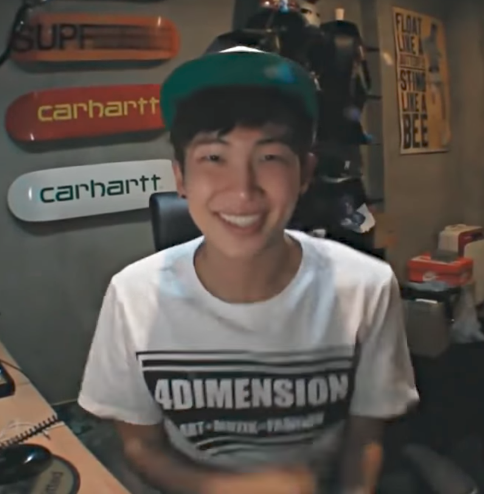

BTS
BTS (방탄소년단). Son un grupo llmanado Bangtan Boys dados a conocer en el 2011. La agencia estuvo buscando desde 2010 un grupo masculino que basado en el Hip-Hop.
Debido a esto, realizó una audición llamada “Hit It” y tras la elección de los miembros se daría nombre al nuevo grupo. Estaban aproximados a debutar en el 2010 después de la audición pero la agrupación atravesó por varios cambios de integrantes durante el proceso de entrenamiento y se pospuso.RM sigue siendo el único miembro original de la alineación del grupo.
|  |
2013: Debut con Single Álbum '2 COOL 4 SKOOL'.
El 26 de Mayo de 2013, fue lanzado el primer teaser.
El 2 de junio, el primer integrante en ser revelado fue V en la primera imagen teaser, luego, el 3 de junio fue seguido por Jin, Jimin y Jungkook en la segunda imagen teaser; por último, el 6 de junio, RM, J-Hope y finalmente Suga en la última imagen teaser.
Debutaron oficialmente el 11 de junio de 2013 con el MV 'No More Dream'. Su debut fue en M!Countdown el 13 de junio de 2013.
El 16 de julio de 2013 liberaron su segundo MV llamado 'We Are Bulletproof Pt2'.
Primer Mini-Álbum 'O!RUL8,2?'.
El 27 de agosto de 2013, BigHit Entertainment lanzó un Comeback Trailer que cuenta con imágenes de radios, micrófonos y otros objetos impresos con el logotipo de BTS cayendo y rompiendo el vidrio, siendo acompañados por el Intro de 'O!RUL8,2? de fondo.
En el trailer se da a conocer su primer mini álbum, el nombre del mismo, la fecha de lanzamiento y su nuevo MV. El 1 de septiembre se da a conocer la lista de canciones del nuevo mini álbum. Este cuenta con un Intro, un Skit, un Cypher, un Outro y seis canciones.
Finalmente, después de la publicación de los MV Teaser 1 y 2 el 6 y 8 de septiembre respectivamente, el 11 de septiembre hacen su primer comeback con su nuevo mini álbum 'O!RUL8,2?' y liberan su MV que lleva el nombre de 'N.O'.
2014: Segundo Mini-Álbum 'Skool Luv Affair'.
El 2 de febrero de 2014, el canal de BigHit Entertainment subió el Comeback Trailer, el cual cuenta con una colorida variedad de animaciones que destellan en la pantalla acompañados por RM rapeando parte del Intro de su segundo mini álbum. En este vídeo se revela el nombre del mini álbum 'Skool Luv Affair' y la fecha de su lanzamiento.
El 5 de febrero se dió a conocer la lista de canciones del mini álbum. Este contiene un Intro, un Skit, un Cypher, un Outro y seis canciones. El 11 fue lanzado el MV 'Boy in Luv'.
Regreso con un Álbum Edición Especial 'Skool Luv Affair (Special Addition)
El 6 de abril lanzaron el MV de 'Just One Day', con un concepto un poco diferente a la que nos tiene acostumbrados pero sin perder su propio estilo
El 14 de mayo lanzaron un álbum edición especial que cuenta con 12 canciones: una nueva canción llamada 'Miss Right', un remix de la canción 'I Like It', un Skity el resto son canciones del anterior mini álbum
Debut en Japón con 'No More Dream' y Segundo Sencillo Japonés 'Boy in Luv'.
Bajo la agencia Pony Canyon, el 4 de junio debutaron con el lanzamiento de su primer single álbum en japonés llamado 'No More Dream'. Este cuenta con las canciones: 'No More Dream', 'Rise of Bangtan' y 'I Like It pt.2' todos en versión japonesa.
El 16 de julio lanzan su segundo single álbum en Japón titulado 'Boy in Luv'. Este cuenta con tres canciones: 'Boy in Luv', 'N.O' y 'Just One Day'.
Primer Álbum Completo 'DARK & WILD'.
El 5 de agosto, el canal de Big Hit Entertainment lanzó el Comeback Trailer que contó con animaciones de contrastantes escenas: un paraíso de bosques muy colorido y estructuras abandonadas en blanco y negro, acompañadas por el Intro: 'What Am I To You'.
El 7 de agosto, la compañía lanzó las primeras fotos teaser del nuevo álbum de estudio. El 19 de agosto, el MV 'DANGER' fue lanzado simultáneamente con el álbum. El grupo se presentó en el MV vestido de negro, bailando una aguda coreografía en un túnel de metro.
Regreso con su Segundo Sencillo Promocional 'War of Hormone'.
El 20 de octubre revelaron teaser fotos y que promocionarían otra canción de su álbum completo llamada 'War of Hormone'. El MV fue publicado el 21 de octubre y muestra a los chicos vestidos con trajes retro, actuando incontrolablemente ante la visión de la protagonista femenina. También cuenta con los miembros que bailan en un juego al aire libre.
BTS entonces celebró su primera gira de conciertos llamada BTS Live Trilogy – Episode II: The Red Bullet a lo largo de octubre, noviembre y diciembre. Viajaron a Corea, Filipinas, Singapur, Japón, Tailandia y Malasia.
Tercer Single Japonés 'Danger'.
El 19 de noviembre, el tercer single álbum japonés de BTS fue liberado. Este contiene las versiones japonesas de 'Danger', '進撃の防弾 (Rise of Bangtan)(SONPUB REMIX)' y 'Miss Right'.
Fue lanzado en tres ediciones: edición normal, version A y versión B.
Primer Álbum Japonés 'WAKE UP'.
Se anunció que BTS lanzaría el 24 de diciembre un álbum totalmente en Japonés. El cual contiene 13 tracks en los que se incluyen: un Intro, un Outro, dos canciones nuevas, 'I Like It Pt. 2' y el resto canciones de sus anteriores materiales discográficos pero todas cantadas en japonés.
Su primer álbum Japonés llamado 'WAKE UP', cuenta con 3 versiones diferentes. La versión A será de CD + DVD, en donde el DVD contará con la grabación del JAPAN OFFICIAL FAN MEETING Vol.1 at TOKYO DOME CITY HALL. BTS realizó su primera gira japonesa llamada 防弾少年団1st JAPAN TOUR 2015「WAKE UP: OPEN YOUR EYES」. Viajaron a Tokio, Osaka, Nagoya y Fukuoka desde el 10 al 19 de febrero de 2015, atrayendo a más de 25.000 espectadores.
2015: Tercer Mini-Álbum 'The Most Beautiful Moment In Life, Pt. 1'.
Llevaron a cabo su primer concierto japonés "WAKE UP: OPEN YOUR EYES" en febrero de 2015 en las ciudades de Tokyo, Osaka, Nagoya y Fukuoka.
El nuevo mini álbum salió a la venta el 29 de abril incluyendo un total de nueve canciones. Los miembros asumieron un papel más importante en la producción, composición, así como en la escritura de letras a comparación con su anterior álbum.
El 17 de abril se lanzó un emotivo Comeback Trailer el cual contiene animaciones vívidas pero llenas de energía acompañas del Intro del mini álbum.
El 20 de abril, el grupo reveló teaser fotos a través de sus cuentas oficiales. En ellas, los miembros posan frente a un hermoso telón de fondo de flores de cerezo para sus fotos individuales.
El 29 de abril, se lanza su tercer mini álbum 'The Most Beautiful Moment In Life, Pt. 1', el cual trajo un gran éxito para el grupo. Tras su lanzamiento, la canción 'I Need U' consiguió el no. 1 en tiempo real en Genie, Daum Music, Soribada y más. También entro en el top 10 en otros sitios de música digital en tiempo real como el MelOn, Bugs, y Naver Music.
El 5 de mayo, su canción 'I Need U' ganó el primer lugar en SBS MTV The Show, el cual marcó su primera victoria desde su debut.
Cuarto Single Japonés 'For You'.
El 4 de junio, BTS lanzó su cuarto single japonés 'For You' y el MV del mismo, para celebrar su primer aniversario de su debut en Japón. El sencillo subió a la cima del Chart diario de Oricon, vendiendo 42.611 copias en su primer día
Regreso con su Segundo Sencillo promocional 'DOPE'.
El 24 de junio, el MV de 'DOPE' fue revelado, marcando el inicio de otro ciclo de promociones para el grupo. Esta canción se encuentra en su anterior mini álbum. El mv recibió un millón de vistas en menos de 15 horas.
Desde su debut en 2013 con el single álbum '2 Cool 4 Skool', BTS ha cantado y rapeado a menudo sobre el empoderamiento y sobre llegar a la cima de la carrera de ratas de la vida. 'DOPE' es la reencarnación de ese mismo mensaje.
Cuarto Mini-Álbum 'The Most Beautiful Moment In Life, Pt. 2'.
El 8 de septiembre se anunció que 'The Most Beautiful Moment In Life, Pt. 1' tendría una segunda parte.
El 18 de noviembre se reveló el Comeback Trailer que inicia con los fans aclamando y continúa con el Intro 'Never Mind' del nuevo mini álbum. La segunda parte y cuarto mini álbum contiene un Intro, un Skit, un Outro y seis canciones.
Desde ese momento BTS empezo a ser un Grupo bastante conocido, entonces nos pasaremos al año 2021
2021: Regreso con nuevo sencillo japonés "Film Out"
El 16 de febrero de 2021, BTS anunció que "Film Out" sería el tema de cierre de la película japonesa Signal the Movie Cold Case Investigation Unit. La canción fue escrita por Jungkook junto a Iyori Shimizu, el vocalista principal del trío de rock japonés Back Number, y el productor de la pista, UTA. Posteriormente, se reveló que Film Out era la pista introductoria del próximo álbum en japonés de la banda, BTS, the Best.
El 2 de abril, BTS lanzó su nuevo sencillo “Film Out", que se incluirá en su próximo álbum recopilatorio japonés “BTS, The Best” que saldrá el 16 de junio.
Al día siguiente, “Film Out” debutó en el No. 1 en la lista diaria de sencillos digitales de Oricon, acumulando un total de 23,344 descargas en Japón el primer día de su lanzamiento. La canción también alcanzó el número 1 en otras importantes listas musicales diarias japonesas, incluidas Line Music, AWA y mora.
Además de su éxito dentro de Japón, “Film Out” también alcanzó la cima de las listas de iTunes en muchos países de todo el mundo inmediatamente después de su lanzamiento. A las 12 p.m. KST del 3 de abril, la pista ya había alcanzado el número 1 en las listas de canciones principales de iTunes en al menos 97 regiones diferentes de todo el mundo.
El video musical de BTS para “Film Out” también obtuvo la impresionante cantidad de 29.38 millones de vistas en las primeras 24 horas de su lanzamiento, estableciendo un nuevo récord para el mayor número de vistas jamás logrado por una de las canciones japonesas originales de BTS en 24 horas.
Regreso con segundo sencillo en inglés "Butter"
El 5 de abril de 2021, varios medios de comunicación informaron que BTS publicaría un nuevo sencillo en mayo, la agencia Big Hit Music, anunció que comunicaría los planes de sus artistas cuando estos estén finalizados.
El 27 de abril, Big Hit Music compartió un tráiler con el logotipo de “Butter”, que se lanzará el 21 de mayo a la 1 p.m. KST. Según una declaración en Weverse, “Butter” es un sencillo digital en que está “rebosante del encanto inimitable de BTS”. Se lanzará una copia física del sencillo en Corea y en todo el mundo durante el verano.
El 2 de mayo, BTS lanzó un nuevo póster teaser conceptual para su próximo sencillo en inglés, donde se pueden ver 7 fotos polaroids con distintos objetos como globos amarillos, cámara, una tostada con un corazón dibujado con lápiz labial, un lanzador de confeti de corazones, una copa, gomitas y un paleta dulce pisada con flechas dibujadas señalando cada una de las fotos esto podría describir de quién podría ser cada objeto.
El 4 de mayo, se reveló 2 teasers conceptuales individuales de los integrantes Jungkook y RM, en ellos se pueden ver cada uno en un cuarto iluminado a colores oscuros (azul y morado), Jungkook se encuentra sentado y frente a el hay una tostada con un corazón de manteca, en la de RM se encuentra arreglando el lugar de una lampara de varios focos con un lanzador de confeti que el mismo activa desde arriba cayendo en él, el confeti dorado. Se descubrió que la canción de fondo que se escucha en los clips es de un instrumental que se llama 2020 Instrumental Versión de IamDayLight.
El 5 de mayo, se publicaron otros 2 nuevos teaser conceptuales indivuales de los integrantes Jin y SUGA. En ellos tienen la misma temática que los clips anteriormente revelados pero cada uno con objetos diferentes, Jin se encuentra jugando con globos que tienen una carita sonriente mientras que SUGA se encuentra detrás de una cortina negra asomando la cámara y con rollos fotográficos. El sonido de fondo de estos nuevos clips es de una canción de Bunker Buster llamada "No Such Thing as Bad Press" (No existe la mala publicidad, es una frase muy conocida en USA).
El 6 de mayo, BTS reveló los últimos 3 clips conceptuales de los integrantes V, Jimin y J-Hope, en los teaser se identifican los últimos objetos que se vieron en el poster inicial, V sostiene unas gomitas hasta que las tira al suelo, Jimin bebe de una botella y lo enfoca a la cámara y en el clip de J-Hope se enfocan primero sus zapatillas que en letras chiquitas dice "sub-" escrito en un lado y "human" en el otro, enfocan una paleta 3 veces hasta que termina destrozado en el suelo. Army se dio cuenta que todos los clips conceptuales empiezan enfocando los calzados de cada uno en el que solo el calzado de J-Hope tiene algo escrito en la parte delantera de sus zapatillas.
El 10 de mayo, BTS lanzó su primer teaser grupal para su nuevo sencillo en inglés, donde se puede ver una vibra diferente a su primer sencillo en Inglés, Dynamite. En el poster los miembros se encuentran en un lujoso ascensor, donde visten trajes mientras se mantienen seriamente mirando a la cámara dando un concepto maduro y formal.
Esto es un poco de los chico de BTS
Miembros inactivos:
- Suga (Rapero y Bailarín) (Servicio Militar)
- RM (Líder, Rapero y Bailarín) (Servicio Militar)
- Jimin (Vocalista y Bailarín) (Servicio Militar)
- V (Vocalista y Bailarín) (Servicio Militar)
- Jung Kook (Vocalista, Rapero, Bailarín y Maknae) (Servicio Militar)
Miembros activos:
- Jin (Vocalista y Bailarín)
- J-Hope (Rapero, Vocalista y Bailarín)